The function will return a list output by default, and if the parameter
.auto_gen_empirical is set to TRUE then the empirical data given to the
parameter .x will be run through the tidy_empirical() function and combined
with the estimated lognormal data.
Three different methods of shape parameters are supplied:
mme, see
EnvStats::elnorm()mle, see
EnvStats::elnorm()
Arguments
- .x
The vector of data to be passed to the function.
- .auto_gen_empirical
This is a boolean value of TRUE/FALSE with default set to TRUE. This will automatically create the
tidy_empirical()output for the.xparameter and use thetidy_combine_distributions(). The user can then plot out the data using$combined_data_tblfrom the function output.
Details
This function will attempt to estimate the lognormal meanlog and log sd parameters given some vector of values.
See also
Other Parameter Estimation:
util_bernoulli_param_estimate(),
util_beta_param_estimate(),
util_binomial_param_estimate(),
util_burr_param_estimate(),
util_cauchy_param_estimate(),
util_exponential_param_estimate(),
util_gamma_param_estimate(),
util_geometric_param_estimate(),
util_hypergeometric_param_estimate(),
util_logistic_param_estimate(),
util_negative_binomial_param_estimate(),
util_normal_param_estimate(),
util_pareto_param_estimate(),
util_poisson_param_estimate(),
util_triangular_param_estimate(),
util_uniform_param_estimate(),
util_weibull_param_estimate()
Other Lognormal:
tidy_lognormal(),
util_lognormal_stats_tbl()
Examples
library(dplyr)
library(ggplot2)
x <- mtcars$mpg
output <- util_lognormal_param_estimate(x)
output$parameter_tbl
#> # A tibble: 2 × 8
#> dist_type samp_size min max method mean_log sd_log shape_ratio
#> <chr> <int> <dbl> <dbl> <chr> <dbl> <dbl> <dbl>
#> 1 Lognormal 32 10.4 33.9 EnvStats_MVUE 2.96 0.298 9.93
#> 2 Lognormal 32 10.4 33.9 EnvStats_MME 2.96 0.293 10.1
output$combined_data_tbl |>
tidy_combined_autoplot()

tb <- tidy_lognormal(.meanlog = 2, .sdlog = 1) |> pull(y)
util_lognormal_param_estimate(tb)$parameter_tbl
#> # A tibble: 2 × 8
#> dist_type samp_size min max method mean_log sd_log shape_ratio
#> <chr> <int> <dbl> <dbl> <chr> <dbl> <dbl> <dbl>
#> 1 Lognormal 50 0.909 74.5 EnvStats_MVUE 1.92 0.916 2.09
#> 2 Lognormal 50 0.909 74.5 EnvStats_MME 1.92 0.907 2.11